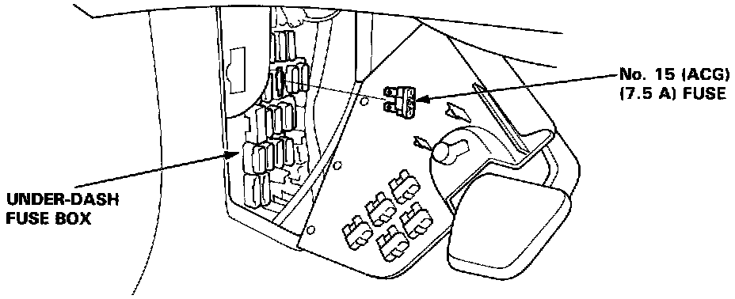

Without Scan Tool
Final Procedure (this procedure must be done after any troubleshooting)1. Remove the jumper wire from the Service Check Connector.
NOTE: If the Service Check Connector is jumpered, the Check Engine light will stay on.
2. Do the ECU Reset Procedure.
3. Set the power seat preset.
ECU Reset Procedure
1. Turn the ignition switch off.

2. Remove the No. 15 (ACG) fuse (7.5 A) from the under-dash fuse box for 10 seconds to reset the ECU.
NOTE: Disconnecting the No. 15 fuse also cancels the power seat setting. Make note of the power seat presets before removing the fuse so you can reset them.